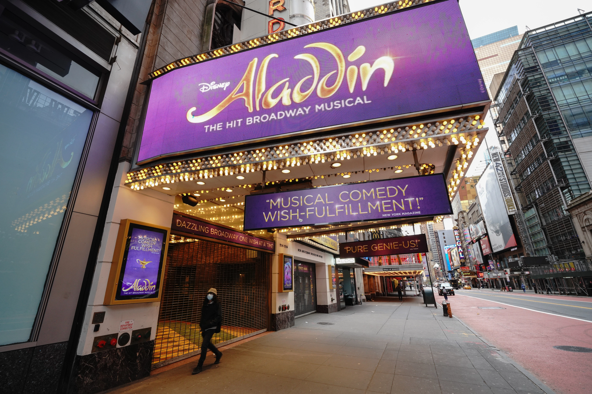
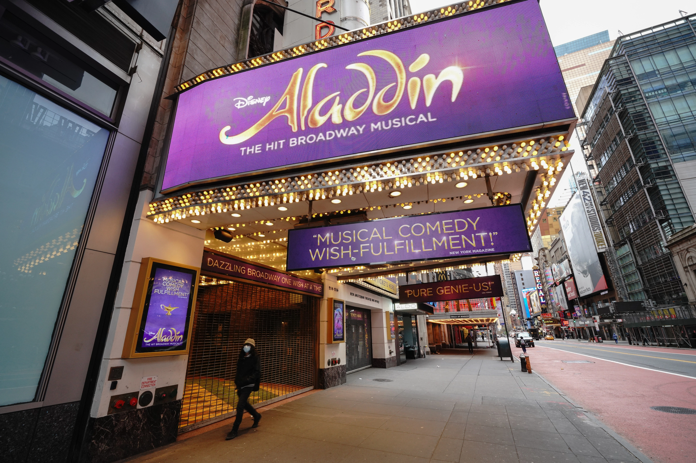

New York City comprises 5 boroughs sitting where the Hudson River meets the Atlantic Ocean. At its core is Manhattan, a densely populated borough that’s among the world’s major commercial, financial and cultural centers. Its iconic sites include skyscrapers such as the Empire State Building and sprawling Central Park.
Fun Facts About New York City
New York City is the most populous city in the United States, with around 8.5 million residents. You can look down from the 86th floor of the Empire State Building, climb 377 steps to the Statue of Liberty’s crown, and tour Ellis Island, where over 12 million immigrants entered the United States between 1892 and 1924

 
